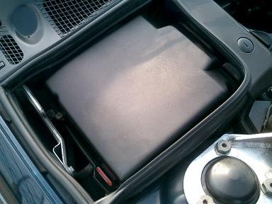
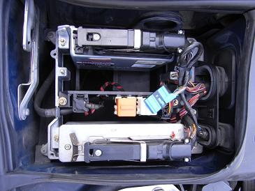
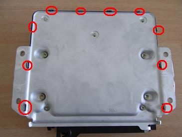
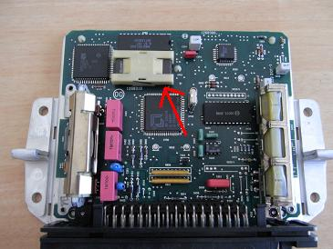
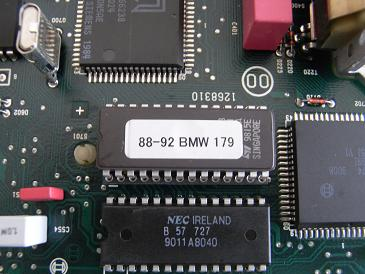
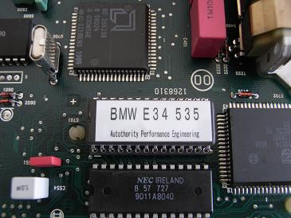

2005/3/29 ROMの交換とその後
 AC Schnitzerのロムに交換してみました。 仕様書では、+18馬力 レブリミット6800rpmとなっています。 E34に載っているＭ３０の場合、モトロニック品番の下３桁の数字（150or179)の ２種類があり、互換性は無いので注意が必要。 その後、ゴンザレスさんにＤＩＮＡＮのROMをいただいたので、交換してみるもあまり違いはわかりませんでした（笑 ってことで、AC SchnitzerのROMでシャーシダイナモにかけてみました。 結果はシャーシダイナモのページで！
|
交換作業  ネジ4本を外し、カバーを外します。場所は、ヒューズボックスの反対側だ。 バルクヘッド側にあるのがモトロニック
|
  車体から外してROMを交換していきます。 本体の裏側にある10ヶ所のツメを起こします。 矢印の部分が今回交換するROM 年式によってプラスチックカバーが取り付けられている。 ROMは静電気に弱く、本来ならば専用のピッキングツールを使用して外すのがベスト。 だが、そんなもの持ってないので素手で外した（笑
|
  左がAC SchnitzerのROM 右がDINANのROM DINANは＋24馬力仕様 どちらも各メーカーのチューニングを施した上で交換されるロムであり、ノーマルのままではあまり効果はないようだ。 |